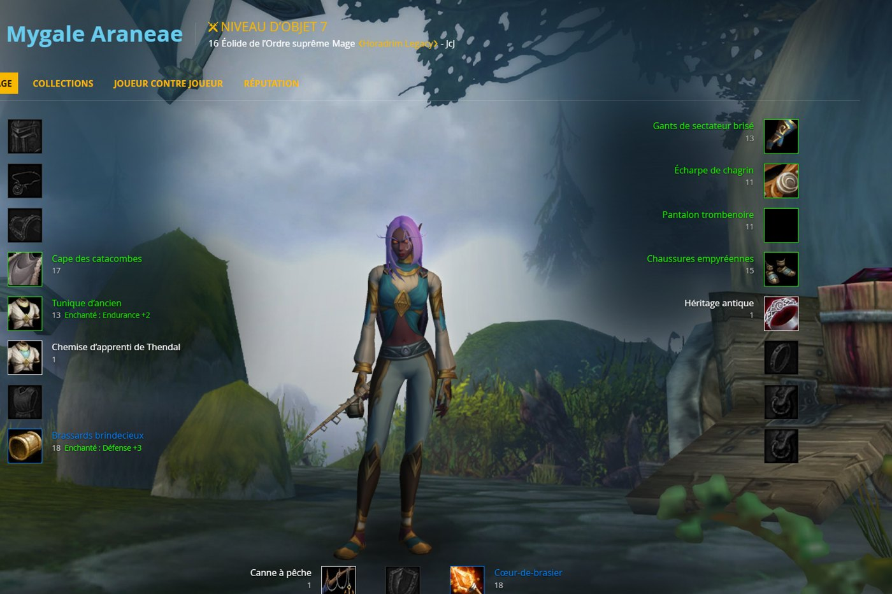

News › Armurerie
L'Armurerie de WoW Forever est en ligne
6 novembre 2026
Blizzard a ouvert l'Armurerie de WoW Forever : tu peux désormais consulter n'importe quel personnage depuis ton navigateur, sans lancer le jeu.

Ce qu'on y trouve
- Personnage : tout l'équipement porté, avec le niveau d'objet et les enchantements.
- Collections : montures, mascottes et autres objets collectionnés.
- Joueur contre joueur : rang d'honneur et statistiques JcJ.
- Réputation : où en est chaque faction.
Pour trouver un personnage, il suffit de chercher son nom et son royaume. Par exemple, voici la fiche de votre créateur, Mygale Araneae, mage éolide de l'Ordre suprême… niveau 16, et déjà quelques pièces de la Salle des Thanes sur le dos !
Ouvrir l'Armurerie de WoW Forever ↗
Pratique pour comparer ton équipement avec notre page BiS niveau 60, ou pour jeter un œil au personnage d'un futur coéquipier avant un donjon.